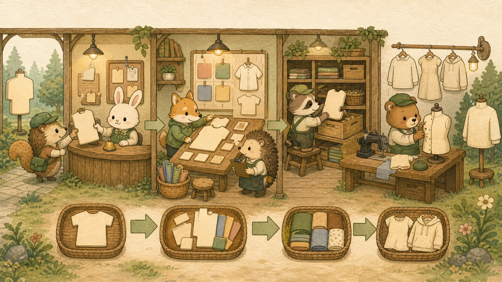

Chapter 02: Spring Boot 3.4+ · 레이어드 아키텍처 · JPA N+1 · Virtual Threads
레이어드 책임 분리, IoC/DI, 스프링 MVC 요청 흐름(DispatcherServlet)·Bean 종류/스코프·커넥션 풀 토대, 엔티티 생명주기와 더티 체킹, 연관관계(1:N)·Cascade, N+1의 Fetch Join 해결, MapStruct DTO 매핑, Java 21 Virtual Threads까지 — Spring Boot 토대부터 14개 섹션 + 실무 보강 박스.
🍃 A. 레이어드 아키텍처 + Spring Boot 3.4+ & IoC/DI
1. Spring 표준 레이어드 아키텍처 — 책임 분리의 척추
현업 Spring 코드는 거의 모두 4계층으로 구성됩니다. 처음 보는 프로젝트라도 이 패턴을 알면 어디에 무엇이 있는지 즉시 파악 가능합니다.
💡 비유로 이해하기: 패션 회사 부서 분업
Controller = 매장 직원 (고객 응대, 요청 받기)
Service = 본사 기획팀 (실제 비즈니스 로직, 트랜잭션 관리)
Repository = 창고 관리자 (DB와 직접 대화)
DTO ↔ Entity = 옷의 두 가지 양식 (외부 전달용 vs 내부 보관용)
각 부서가 자기 일만 하고 위/아래 부서와만 소통합니다. Controller가 직접 DB를 만지는 건 매장 직원이 창고에 침입하는 격입니다.

Controller (요청/응답 변환) →
Service (트랜잭션 + 비즈니스 로직) →
Repository (DB CRUD) →
Entity (DB 매핑)
flowchart TB
Client["📱 클라이언트
HTTP Request (JSON)"]
Controller["🎯 Controller
@RestController
요청 · 응답 변환"]
Service["⚙️ Service
@Service @Transactional
비즈니스 로직"]
Repository["📦 Repository
extends JpaRepository
DB 접근"]
DB[(💾 Database
PostgreSQL)]
DTO["📋 DTO
Request/Response
외부 전달용"]
Entity["🏷️ Entity
@Entity
내부 보관용"]
Client -->|"@RequestBody
@Valid"| Controller
Controller -->|"DTO → 인자"| Service
Service -->|"Entity 조회/저장"| Repository
Repository -->|"JPQL / SQL"| DB
Controller -.->|"변환"| DTO
Service -.->|"변환"| Entity
DB -.->|"매핑"| Entity
// ✅ 도메인 중심 패키지 (Domain-Driven) — 권장
com.antigravity.shop
├── product
│ ├── controller // ProductController.java
│ ├── service // ProductService.java
│ ├── repository // ProductRepository.java
│ ├── domain // Product.java (@Entity)
│ └── dto // ProductRequest/Response.java
├── order
│ └── ... (동일 구조)
└── ShopApplication.java
// ❌ 레이어 중심 패키지 — 스파게티 위험
com.antigravity.shop
├── controllers // ProductController, OrderController, UserController...
├── services // 모든 Service가 한 폴더 → 커질수록 도메인 경계 흐려짐
├── repositories
└── entities// 1️⃣ Controller — HTTP 변환만, 비즈니스 로직 금지
@RestController
@RequiredArgsConstructor
@RequestMapping("/api/products")
public class ProductController {
private final ProductService productService;
@GetMapping("/{id}")
public ProductResponse getProduct(@PathVariable Long id) {
return productService.findById(id); // Service에 위임
}
}
// 2️⃣ Service — 비즈니스 로직 + 트랜잭션 경계
@Service
@RequiredArgsConstructor
@Transactional(readOnly = true) // 클래스 기본은 readOnly
public class ProductService {
private final ProductRepository productRepository;
public ProductResponse findById(Long id) {
Product product = productRepository.findById(id)
.orElseThrow(() -> new EntityNotFoundException("상품 없음 id=" + id));
return ProductResponse.from(product); // Entity → DTO 변환
}
@Transactional // 쓰기는 readOnly 해제
public ProductResponse create(ProductRequest req) {
Product saved = productRepository.save(req.toEntity());
return ProductResponse.from(saved);
}
}
// 3️⃣ Repository — DB 접근만
public interface ProductRepository extends JpaRepository<Product, Long> {
Optional<Product> findByName(String name);
}
// 4️⃣ Entity vs DTO — 절대 섞지 말 것!
@Entity // DB 테이블과 1:1 매핑
@Getter
public class Product {
@Id @GeneratedValue Long id;
String name;
int price;
@OneToMany List<Review> reviews; // DB 관계
}
// DTO는 API 전송용 — Entity와 분리
public record ProductResponse(Long id, String name, int price) {
public static ProductResponse from(Product p) {
return new ProductResponse(p.getId(), p.getName(), p.getPrice());
}
}왜 DTO와 Entity를 분리해야 하는가:
- 순환 참조 방지: Entity의 양방향 관계(@OneToMany)가 JSON 직렬화 시 무한 루프 발생
- API 안정성: DB 스키마가 변경돼도 API 응답 형식이 고정됨
- 보안: 내부 필드(비밀번호 해시 등)가 실수로 응답에 노출되는 사고 방지
- 지연 로딩 함정: Service 트랜잭션 경계를 벗어난 Entity를 만지면 LazyInitializationException
⛓️ 이 레이어드 구조 위에서 검증/예외 처리는 Chapter 4 — Bean Validation 섹션에서, DTO 자동 매핑은 본 챕터의 MapStruct 박스에서 다룹니다.
2. 스프링 부트 3 핵심: 자재 관리소(IoC)와 주문 설계서(Bean)
자바 객체의 생성과 소멸을 개발자가 아닌 스프링 컨테이너가 대신 관리하는 패러다임입니다.
💡 비유로 이해하기: 패션 디자이너와 자재 창고
레거시 코딩: 의류 디자이너가 옷을 만들 때마다 밖에 나가 실과 바늘을 직접 사옵니다(new). 바늘이 바뀌면 코드를 수정해야 합니다.
스프링 코딩(IoC/DI): '자재 창고(IoC Container)'가 있습니다. 디자이너는 "나는 실과 바늘이 필요하다"라고 명세서만 적어둡니다. 아침마다 창고 시스템이 알맞은 자재(Spring Bean)를 자동으로 배송(DI 주입)해 줍니다.
3. DI 주입의 실무 표준: @RequiredArgsConstructor
과거에는 @Autowired를 필드에 달았지만, 테스트가 어렵고 순환 참조 위험이 있었습니다. 최신 실무 표준은 생성자 주입입니다.
// ❌ 과거의 나쁜 예 (필드 주입)
@Service
public class OrderService {
@Autowired
private ProductRepository productRepository; // 테스트 시 Mock 객체 주입 불가능!
}
// ✅ 현대 실무 표준 (생성자 주입)
@Service
@RequiredArgsConstructor // final이 붙은 필드의 생성자를 자동 생성!
public class OrderService {
// 1. final로 선언하여 불변성(Immutability) 보장
private final ProductRepository productRepository;
private final PaymentService paymentService;
public void order() {
productRepository.findById(...);
}
}4. 스프링 MVC 요청 흐름과 Bean 기초
Spring Boot의 "마법"(@RestController만 붙이면 API가 동작) 뒤에는 명확한 요청 처리 흐름과 Bean 관리 체계가 있습니다. 이 토대를 알아야 디버깅과 면접 모두 막히지 않습니다.
① DispatcherServlet 요청 흐름
모든 HTTP 요청은 DispatcherServlet(프론트 컨트롤러)을 거쳐 적절한 Controller로 라우팅됩니다. 톰캣이 받은 요청이 어떻게 내 코드까지 도달하는지의 전체 그림입니다.
flowchart LR
Client["🌐 클라이언트
HTTP 요청"]
Tomcat["🐱 Tomcat
(내장 WAS)"]
Filter["🚧 Servlet Filter
(인증 등)"]
DS["🎯 DispatcherServlet
(Front Controller)"]
HM["🗺️ HandlerMapping
(URL→메서드 매칭)"]
Ctrl["📥 Controller
@RestController"]
Svc["⚙️ Service
@Service"]
Repo["📦 Repository"]
Client --> Tomcat --> Filter --> DS
DS --> HM --> Ctrl
Ctrl --> Svc --> Repo
Repo -.응답.-> Ctrl -.JSON 변환.-> DS -.HTTP 응답.-> Client
style DS fill:#a29bfe,color:#fff
style Ctrl fill:#74b9ff,color:#fff
style Svc fill:#fd79a8,color:#fff
핵심: DispatcherServlet이 모든 요청의 단일 진입점이며, HandlerMapping이 URL을 보고 어느 Controller 메서드를 부를지 결정합니다. 응답은 MessageConverter가 객체를 JSON으로 변환합니다.
② @Component vs @Bean vs @Configuration vs @Service
| 어노테이션 | 용도 |
|---|---|
@Component | 범용 Bean 등록 (클래스 스캔 대상) |
@Service | @Component의 특수화 — 비즈니스 로직 계층 명시(기능 동일, 의미 구분) |
@Repository | @Component 특수화 — DB 예외를 Spring 예외로 변환 |
@Configuration + @Bean | 외부 라이브러리 객체 등 직접 제어가 필요한 Bean을 메서드로 등록 |
// @Component 계열: 내 클래스에 직접 붙여 자동 스캔 등록
@Service
public class ProductService { }
// @Bean: 외부 라이브러리 객체(내가 수정 못 하는 클래스)를 등록할 때
@Configuration
public class AppConfig {
@Bean
public RestClient restClient() { // 직접 생성 로직 제어
return RestClient.builder().baseUrl("https://api.shop.com").build();
}
}③ Bean Scope — singleton vs prototype
Spring Bean의 기본 스코프는 singleton — 컨테이너에 딱 1개 인스턴스만 만들어 공유합니다. 그래서 Service/Repository에 상태(인스턴스 변수)를 두면 안 됩니다(여러 요청이 공유 → 동시성 버그). 매번 새 인스턴스가 필요하면 @Scope("prototype")를 쓰지만 실무에선 드뭅니다.
④ 커넥션 풀 (HikariCP)
💡 비유로 이해하기: 공유 우산 대여소
DB 연결(Connection)은 생성 비용이 비쌉니다. 매 요청마다 새로 만들면 느려서, 미리 N개를 만들어 풀(pool)에 담아두고 빌려 쓰고 반납합니다. Spring Boot의 기본 커넥션 풀이 HikariCP이며, 풀 크기(maximum-pool-size)가 동시 처리량을 좌우합니다.
# application.yml
spring:
datasource:
hikari:
maximum-pool-size: 10 # 동시에 빌려줄 수 있는 커넥션 수
connection-timeout: 30000 # 풀에서 못 빌리면 30초 대기 후 예외⛓️ 이 요청 흐름은 섹션 1 레이어드 아키텍처의 실제 동작이며, 커넥션 풀은 Chapter 3 — DB와, 싱글톤 Bean의 동시성 주의는 Ch 1 스레드 기초와 연결됩니다.
🗄️ B. JPA & 영속성 컨텍스트
5. ORM의 등장 — JPA vs MyBatis
과거에는 개발자가 SQL을 한땀 한땀 작성했습니다(MyBatis). JPA는 자바 객체를 저장하면 프레임워크가 SQL을 자동 생성해 줍니다.
6. 엔티티 매핑 기초 — 클래스를 테이블로
@Entity // JPA가 관리하는 테이블과 매핑될 객체임을 선언
@Table(name = "products") // 실제 생성될 DB 테이블 이름 지정
@Getter
@NoArgsConstructor(access = AccessLevel.PROTECTED) // JPA는 기본 생성자가 필수! (안전하게 PROTECTED)
public class Product {
@Id // Primary Key (PK) 지정
@GeneratedValue(strategy = GenerationType.IDENTITY) // MySQL의 AUTO_INCREMENT 적용
private Long id;
@Column(nullable = false, length = 100) // varchar(100) NOT NULL
private String name;
private int price; // @Column을 생략해도 기본적으로 컬럼으로 매핑됨
// 정적 팩토리 메서드 (생성자를 열어두는 대신 팩토리로 캡슐화)
public static Product create(String name, int price) {
Product p = new Product();
p.name = name;
p.price = price;
return p;
}
}📐 Rehab Fashion 도메인 ERD: 본 챕터에서 다루는 5개 엔티티의 관계도입니다. 1:N, N:1 관계와 외래 키가 어떻게 연결되는지 시각적으로 파악하세요.
erDiagram
PRODUCT ||--o{ REVIEW : "has many"
PRODUCT ||--o{ ORDER_ITEM : "contained in"
ORDER ||--o{ ORDER_ITEM : contains
USER ||--o{ ORDER : places
USER ||--o{ REVIEW : writes
PRODUCT {
bigint id PK
varchar name
int price
varchar category
int stock
varchar image_url
}
ORDER {
bigint id PK
bigint user_id FK
varchar status
int total
timestamp created_at
}
ORDER_ITEM {
bigint id PK
bigint order_id FK
bigint product_id FK
int quantity
}
REVIEW {
bigint id PK
bigint product_id FK
bigint user_id FK
int rating
text content
}
USER {
bigint id PK
varchar email UK
varchar name
varchar password_hash
}
7. 영속성 컨텍스트와 더티 체킹 (Dirty Checking)
JPA는 데이터를 수정할 때 repository.update() 같은 메서드를 호출하지 않습니다. 트랜잭션 내에서 객체의 값을 바꾸기만 하면 UPDATE 쿼리가 자동 발송됩니다.
💡 비유로 이해하기: 1차 캐시 스냅샷 비교
JPA는 DB에서 데이터를 읽어올 때 메모리(1차 캐시)에 원본의 '스냅샷 사진'을 하나 찍어 둡니다(영속성 컨텍스트). 트랜잭션이 끝날 때(Commit 직전), 스냅샷 사진과 현재 객체의 상태를 비교하여 다르면 스스로 UPDATE SQL을 만들어 DB로 날립니다.
@Service
@RequiredArgsConstructor
public class ProductService {
private final ProductRepository productRepository;
@Transactional // 트랜잭션 시작
public void updatePrice(Long id, int newPrice) {
// 1. SELECT 쿼리로 DB에서 가져오며 영속성 컨텍스트에 스냅샷 저장!
Product product = productRepository.findById(id).orElseThrow();
// 2. 객체의 값만 변경! (repository.save() 호출 불필요!!!)
product.changePrice(newPrice);
// 3. 트랜잭션 종료 시점 -> 스냅샷과 비교 -> 값이 다르네? -> UPDATE 쿼리 발사!
}
}📌 엔티티 생명주기 4상태 (더티 체킹의 전제)
더티 체킹이 "왜 영속 상태에서만 동작하는지" 이해하려면 엔티티의 4가지 상태를 알아야 합니다.
| 상태 | 의미 | 더티 체킹 |
|---|---|---|
| Transient(비영속) | new로 막 생성, 영속성 컨텍스트가 모름 | ❌ |
| Persistent(영속) | save()/find()로 영속성 컨텍스트가 관리 중 | ✅ (값 바꾸면 자동 UPDATE) |
| Detached(준영속) | 관리되다가 분리됨(트랜잭션 종료, clear()) | ❌ (값 바꿔도 반영 안 됨!) |
| Removed(삭제) | remove()로 삭제 예약 | - (DELETE 예약) |
실무 함정: 트랜잭션(Service 메서드) 밖에서 Entity 값을 바꾸면 Detached 상태라 DB에 반영되지 않습니다. 또 Lazy 로딩된 연관 객체를 트랜잭션 밖에서 접근하면 LazyInitializationException이 터집니다 — 이것이 레이어드 아키텍처에서 DTO 변환을 Service 안에서 끝내야 하는 이유입니다.
🛠️ [실무 보강 박스] MapStruct — Entity ↔ DTO 변환의 자동화
레이어드 아키텍처를 따르면 Entity ↔ DTO 변환 코드가 폭증합니다. 손으로 다 쓰면 보일러플레이트가 무겁고 휴먼 에러도 발생합니다. MapStruct는 컴파일 타임에 변환 코드를 자동 생성해주는 어노테이션 프로세서입니다.
// build.gradle (Lombok과 함께 사용 시 binding 의존성 주의)
dependencies {
implementation 'org.mapstruct:mapstruct:1.5.5.Final'
annotationProcessor 'org.mapstruct:mapstruct-processor:1.5.5.Final'
annotationProcessor 'org.projectlombok:lombok-mapstruct-binding:0.2.0'
}
// ProductMapper.java
@Mapper(componentModel = "spring") // Spring Bean으로 등록
public interface ProductMapper {
ProductResponse toResponse(Product product);
Product toEntity(ProductRequest request);
List<ProductResponse> toResponseList(List<Product> products);
}
// Service에서 주입받아 사용
@Service
@RequiredArgsConstructor
public class ProductService {
private final ProductRepository repo;
private final ProductMapper mapper; // 자동 생성된 구현체 주입
public ProductResponse findById(Long id) {
return mapper.toResponse(repo.findById(id).orElseThrow());
}
}수동 vs MapStruct 트레이드오프:
수동 변환 (record + static from)
의존성 0개, 코드 명확. 필드 적을 때 OK. 필드 많거나 변환 로직 복잡해지면 비효율.
MapStruct
컴파일 타임 코드 생성 (런타임 0 비용). IDE에서 생성된 Impl 확인 가능. Lombok과 동시 사용 시 binding 어노테이션 프로세서 필수.
🔗 C. 연관관계 매핑 & N+1 최적화
8. 1:N / N:1 양방향 연관관계와 연관관계의 주인
DB는 왜래키(FK) 하나로 양방향 조회가 가능하지만, 자바 객체는 양쪽 필드에 서로를 참조해야 합니다. 외래 키를 가진 쪽이 연관관계의 주인이 됩니다.
// =================== 1. N쪽 (리뷰) - 연관관계의 주인! ===================
@Entity
public class Review {
@Id @GeneratedValue
private Long id;
// 외래 키(member_id)를 관리하는 진짜 주인!
// 다대일(N:1) 매핑. 무조건 LAZY 설정!
@ManyToOne(fetch = FetchType.LAZY)
@JoinColumn(name = "member_id")
private Member member;
}
// =================== 2. 1쪽 (회원) - 주인이 아님! (조회만 가능) ===================
@Entity
public class Member {
@Id @GeneratedValue
private Long id;
// 나는 주인이 아님! 내 데이터는 저쪽 클래스(Review)의 'member' 필드에 매핑되어 있음(mappedBy)
// 리스트에 데이터를 추가해도 DB에 외래 키가 업데이트되지 않음 (조회용)
@OneToMany(mappedBy = "member")
private List<Review> reviews = new ArrayList<>();
}9. 영속성 전이(Cascade)와 고아 객체(Orphan Removal)
부모 엔티티를 저장할 때 자식 엔티티도 한꺼번에 저장하거나, 부모와 연관이 끊어진 자식을 자동 삭제할 때 사용합니다.
@Entity
public class Post {
// 1. CascadeType.ALL: 게시글을 save()하면 files 안의 파일들도 자동으로 INSERT 됨!
// 2. orphanRemoval = true: 게시글 리스트에서 파일을 삭제하면, DB에서도 DELETE 쿼리가 나감!
@OneToMany(mappedBy = "post", cascade = CascadeType.ALL, orphanRemoval = true)
private List<File> files = new ArrayList<>();
public void addFile(File file) {
this.files.add(file);
file.setPost(this); // 양방향 연관관계 편의 메서드
}
public void removeFile(File file) {
this.files.remove(file); // 리스트에서 뺐을 뿐인데 DB에서 DELETE 실행됨! (orphanRemoval)
}
}10. 실무 장애 0순위 — N+1 쿼리의 발생 원리
목록을 조회할 때, 부모 목록을 가져오는 1번의 쿼리 이후, 그 부모의 자식들을 조회하기 위해 N번의 추가 쿼리가 폭격처럼 발송되는 문제입니다.
// [Visual N+1 Query Timeline]
// 1. SELECT * FROM product; (1번 쿼리로 100개의 상품 가져옴)
// ├── Product 1 (셔츠) ──► SELECT * FROM review WHERE prod_id = 1; (쿼리 폭발!)
// ├── Product 2 (코트) ──► SELECT * FROM review WHERE prod_id = 2; (쿼리 폭발!)
// ├── ...
// └── Product 100 ──► SELECT * FROM review WHERE prod_id = 100;
// ===> 상품 100개 가져왔는데 총 1 + 100 = 101번의 데이터베이스 타격!! 💥 서버 마비!
public List<ProductResponse> getProducts() {
// 1. 여기서 쿼리 1번 발생 (List<Product> N개 반환)
List<Product> products = productRepository.findAll();
return products.stream().map(product -> {
// 2. 루프를 돌며 가짜 객체(Proxy)였던 reviews의 getter를 때리는 순간 추가 쿼리 발사!
int reviewCount = product.getReviews().size();
return new ProductResponse(product.getName(), reviewCount);
}).toList();
}11. Fetch Join — N+1 문제의 강력한 해결책
JPA의 Fetch Join을 사용하면 DB 단에서 JOIN을 수행하여 부모와 자식 데이터를 단 1번의 쿼리로 묶어 메모리에 올립니다.
MultipleBagFetchException. 페이징이 필요하면 @BatchSize/default_batch_fetch_size 또는 To-One만 Fetch Join 후 컬렉션은 배치로 푸는 전략이 더 안전합니다.
// [Visual Fetch Join Timeline]
// 1. SELECT p.*, r.* FROM product p JOIN FETCH p.reviews r;
// ├── 셔츠 & [리뷰1, 리뷰2] ──► (DB가 한 방에 이쁘게 다 묶어서 전송!)
// └── 코트 & [리뷰3]
// ===> 상품이 5만 개든, 리뷰가 100만 개든 단 1번의 DB 통신(SELECT)으로 완결!!
public interface ProductRepository extends JpaRepository<Product, Long> {
// 연관된 reviews를 한 묶음으로 즉시(Eager) 한꺼번에 긁어옴
@Query("select p from Product p join fetch p.reviews")
List<Product> findAllWithReviews();
}📊 D. Spring Data JPA 실전 스킬
12. 페이징과 정렬 (Pageable)
Limit, Offset 쿼리를 직접 작성할 필요 없이, 컨트롤러에서 Pageable 객체만 받으면 JPA가 자동으로 페이징 쿼리를 날려줍니다.
public interface ProductRepository extends JpaRepository<Product, Long> {
// Page로 반환하면 count 쿼리도 같이 자동으로 날려줌!
Page<Product> findByCategory(String category, Pageable pageable);
}
@RestController
@RequiredArgsConstructor
public class ProductController {
// 프론트엔드에서 파라미터로 넘어오는 page, size 등을 Spring이 Pageable 객체로 자동 변환!
@GetMapping("/api/products")
public Page<Product> getProducts(
@RequestParam String category,
Pageable pageable) {
return productRepository.findByCategory(category, pageable);
}
}13. @Transactional의 본질과 읽기 전용 최적화
트랜잭션은 "전부 성공하거나 전부 실패(Rollback)"를 보장합니다. 또한 단순히 조회만 할 때는 읽기 전용 옵션으로 엄청난 성능 향상을 얻을 수 있습니다.
🚀 @Transactional(readOnly = true) 의 위력
데이터를 수정하지 않는 조회 전용 메서드에 이를 붙이면, Hibernate는 read-only 힌트(FlushMode.MANUAL 등)를 통해 flush와 더티 체킹 부담을 줄일 수 있습니다. 큰 조회에서 메모리/CPU 절약에 도움이 되며, 무엇보다 "이 메서드는 쓰기를 하지 않는다"는 의도를 명확히 전달하고 읽기 복제본(replica) 라우팅에도 활용됩니다.
⚠️ 정확히 어떤 최적화가 적용되는지는 JPA 프로바이더(Hibernate)·버전에 따라 다릅니다. "항상 스냅샷을 0으로 만든다"고 단정하기보다 "부담을 줄이는 성능 힌트 + 의도 표현"으로 이해하는 게 정확합니다.
📚 02챕터 헷갈리는 용어 사전
14. Virtual Threads — 동기 코드로 비동기처럼 (Project Loom)
Java 21 LTS의 가장 큰 변화입니다. 기존 OS 스레드(1 스레드 ≈ 1MB 스택)의 한계를 넘어, JVM이 관리하는 가상 스레드로 수십만 개 동시 처리가 가능해졌습니다.
💡 비유로 이해하기: 호텔 직원의 효율적 배치
전통 OS 스레드는 호텔 객실 직원이 각자 자기 객실 손님이 잘 때까지 그 방 앞에 서 있는 격입니다. 비효율적이지만 단순합니다.
Virtual Thread는 손님이 자는 동안엔 다른 객실 일을 처리하다가, 손님이 일어나면 즉시 돌아옵니다. 같은 인력으로 (대기가 많은 상황에서) 훨씬 많은 손님을 받습니다 — 단, 실제 처리량은 DB 풀·CPU·외부 API 한계에 묶입니다.
WebFlux/리액티브 vs Virtual Threads:
😩 WebFlux (이전 방식)
코드를 Mono/Flux로 리액티브 체이닝 강제. 학습 곡선 높고 디버깅 지옥.
😎 Virtual Threads
평범한 동기 코드 그대로. JVM이 알아서 블로킹 지점에서 스레드 양보. 리액티브 없이 10만 동시 요청.
// application.yml
spring:
threads:
virtual:
enabled: true # ← 끝. 모든 Tomcat 요청이 가상 스레드로 처리됨@Service
@RequiredArgsConstructor
public class OrderService {
private final InventoryClient inventoryClient;
private final PaymentClient paymentClient;
private final OrderRepository orderRepo;
@Transactional
public Order placeOrder(OrderRequest req) {
// ✅ 평범한 동기 코드. Virtual Thread가 자동으로 효율 처리
var stock = inventoryClient.checkStock(req.productId()); // I/O 대기
if (stock < req.quantity()) throw new OutOfStockException(req.productId());
var payment = paymentClient.charge(req.amount()); // I/O 대기
if (!payment.isSuccess()) throw new PaymentFailedException();
return orderRepo.save(Order.from(req));
}
}
// WebFlux로 작성하면 코드 라인 수가 4~5배. 가독성/디버깅 측면에서 압도적.주의점: synchronized 블록 안에서 블로킹 I/O를 하면 가상 스레드가 OS 스레드를 점유(pinned)하는 안티 패턴이 발생합니다. ReentrantLock으로 대체 권장.
🛠️ 직접 만들어보기 — "이걸로 만들 수 있나?" 체크포인트
읽기만으로는 복귀가 안 됩니다. 이 챕터를 끝냈다면 아래를 실제 Spring Boot 프로젝트로 만들어 돌려보세요.
- Spring Initializr로 프로젝트 생성 (Web, JPA, H2/PostgreSQL, Lombok)
Product↔Review(1:N) 엔티티 + Repository, Controller→Service→Repository 계층으로 CRUD API 1개 (DTO ↔ Entity 분리 준수)- N+1을 의도적으로 발생시킨 뒤(
show-sql로 쿼리 수 확인) → Fetch Join 또는@BatchSize로 해결하고 쿼리 수 비교 - 조회 메서드에
@Transactional(readOnly=true)적용, 쓰기 메서드와 분리